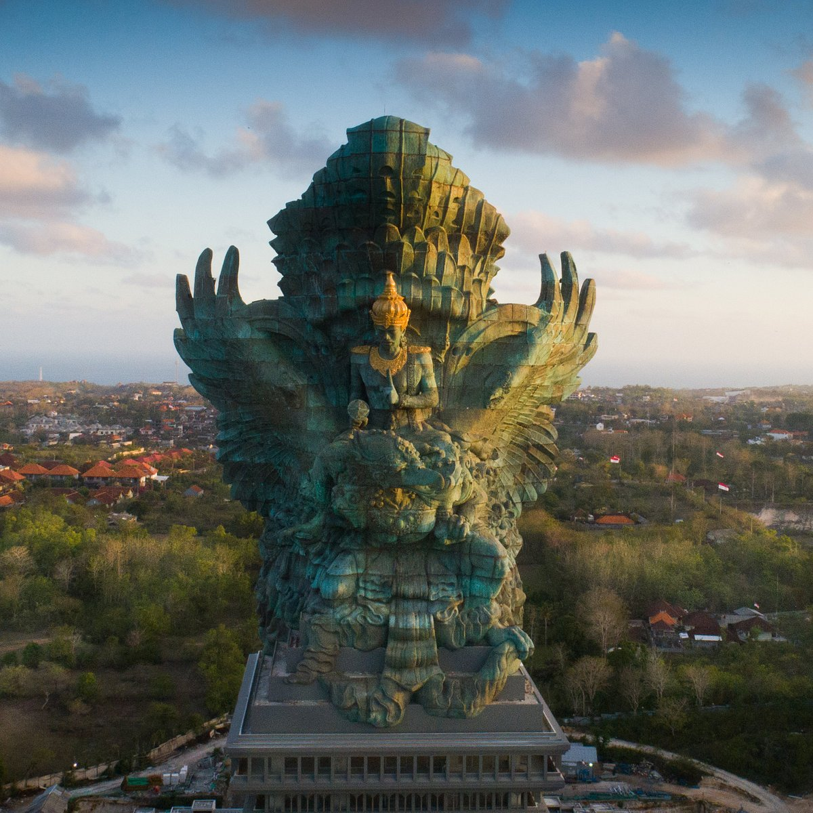

Garuda Wisnu Kencana
Main Idea: The Design of Garuda wisnu kencana statue
Main Point:
This statue was designed to be the tallest statue in Indonesia, and was inspired by an event rooted in Hinduism about Garuda conducting a quest for Tirta Amerta, the elixir of life. The construction of the monument was completed on July 31 2018 and was inaugurated by Indonesian President Joko Widodo on September 22 2018. This statue is projected to bind the spatial layout with a visibility of up to 20 km so that it can be seen from Kuta, Sanur, Nusa Dua to Tanah Lot.
